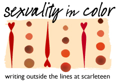

Sexuality in Color: Where “Latinx” came from (and where it might go)
by

I can’t remember the first time I heard the word “Latinx.” The first time I saw it, though, was online. I was in college.
Pre-university, I’d gone to school with few Latinx people to bounce my ideas off of. College was only marginally different but at least there, I found places for us to convene; we came together in small clubs, in community events, in political advocacy.
And it was in spaces like these that we discussed new words and ideas, like “Latinx.” Some Latinx friends put the “x” in everything—amigxs, chicxs, muchachxs—while others dissected the word, trying to parse just how to use it: Is it a self-identifier and a group identifier? Do Latino and Latina exist alongside Latinx, or does Latinx replace them? Over lunch, my sister and I talked about it too, with me suggesting that it shouldn’t be pronounced “la-tinks,” instead explaining that I kept the old “Latino” pronunciation to make it “lah-teen-ex.”
The word was new to me, but not everyone. The word had a history, a lineage from which it was born: Latina/o, Latin@, Latine. Each of those incarnations weren’t perfect answers to Spanish’s inherent gendered state, but they served to better represent my fellow Latinx who wished to disrupt the ever-masculine “Latino” or wanted a descriptor that accounted for their non-binary identities.
But I didn’t use it consistently. At home, in front of my parents who’d grown up speaking Spanish, it seemed like an affront to their language. When meeting other Latinx people, I’d sometimes say the word and be met with confusion, causing me to avoid identifiers altogether to avoid the discomfort of discussion.
Beyond myself, the word sparked hot debate among Latinx in deciding whether it should truly take over or not. Some say that’s it an American imposition on Spanish, that there are better alternatives, or that the word carries with it colonialist traditions. Others respond by saying it tends to the needs of excluded communities in an immediate way, whether or not it’s perfect, and that it pushes people to necessary openness.
The word took hold in a way that its predecessors hadn’t. How does this happen?
The short of it: Words, and their meanings, change all the time. This thought is the basis of linguistic activism, a form of advocacy that looks at the ways we use words and seeks to employ them more equitably. The tensions in Romantic languages like Spanish—a language with words that are often gendered—have long been discussed and grappled with by such activists too.
Those earlier forms of Latinx, for example, had specific goals in mind; Latina/o sought to put more importance in the “a” as the masculine in Spanish often take precedence over the feminine (it’s why, when you’re speaking in Spanish, you call a mixed-gender group of friends the masculine “amigos” and not “amigas”). Latin@ is another of these early incarnations, born online, an amalgamation of the two. (Merriam-Webster provides a cursory history, if you’re looking for more.)
And then there was “Latinx.”
I talked to activist-scholar Robyn Henderson-Espinoza about this.
“I use the term Latinx because I am a nonbinary trans person,” they told me, over email. “For a long time, I used Latin@, because it intermingled the a and the o to show a non-dominant form of Latino/a. Previous to that, I used Latina/o to privilege the femaleness of Latinidad, and because I’m indebted to Latina Feminism.”
That metamorphosis of “Latino” to “Latinx” I was illustrating earlier? Henderson-Espinoza reminded me that those changes didn’t begin among academics.
“I remember hearing the term Latinx about 10 years ago from Trans Latinas and other queer Latinxs,” they said. Henderson-Espinoza said only after that did it first begin to enter academia.
It’s probably for similar reasons that “Latinx” didn’t begin to enter mainstream discourse until recently; one study of “Latinx” says that Google first reported searches of the word in 2004, when its popularity was pretty minimal, and then reports a huge spike in searches in 2016.
Cristobal Salinas, an assistant professor at Florida Atlantic University, conducted research that sought to map out the evolution of the word “Latinx” in higher education.
His research found that popular usage of the word began among college students seeking to “challenge the ideologies of language, culture, and gender, and as a way to recognize the importance of the intersectionality of social identities.” An early example of that occurred in December 2014 at Columbia University, when a Mexican-American group changed their name from “Chicano Caucus” to “Chicanx Caucus.” He also found it popular on social media, where the term gained a better foothold.
There’s some substance to criticisms that accuse the word of having American roots. But Salinas doesn’t see that as a problem with the word; he sees that as a misunderstanding of how language changes. Even bigger than that, he sees that as proof that we need to diversify the languages in which we have these conversations.
“It’s not necessarily Spanish,” Salinas says of the word. “But who makes language? Who’s the ‘language police patrol’?” It’s the people speaking language that change it, he continues. (And besides that, Salinas says he’s working on another paper that links the gender-neutral “x” to indigenous Latinx communities, like the Muxe community in Oaxaca.)
As a Latino whose first language is Spanish, he says that he’s seen this problem in larger swaths of academia. A large majority of research like his is written in English. Non-English speaking researchers in Latin America are often required to write their dissertations and peer-reviewed research in English as well. How can you deliver research to the communities you’re part of if you’re not able to write in their home languages, he wonders? It’s a quandary that’s haunted much of his work, prompting him to research the need to transform academia in the past.
“Research becomes me-search,” he says. “I’m doing this research because I’m attached to it.” He wishes that he didn’t always have to translate it for his Spanish-speaking parents and says that barriers like that make these conversations harder to have constructively. Sure, some words in English don’t have direct translations in Spanish—Salinas ran into this issue when working on a book about hazing, a concept that doesn’t have a direct Spanish equivalent—but again, he says, “it goes back to that fact that we don’t attempt to translate this into different languages” in the first place.
So the word has room to grow. In many ways, all language does.
Just look at me: I lean heavy on phrases like “hey, man” and “you guys” when speaking to my friends. I used to justify this by telling myself that it was fine; I called non-male friends this often. But if I’m interrogating the way I speak Spanish, why does that not carry over to English? Why do I settle for phrases that don’t express what I truly think?
“As with most things & most words and phrases, Latinx will both have a memory and evolve,” Henderson-Espinoza wrote of the word’s future. “Recently, I’ve seen the following: LatinoXa, with the x capitalized but combined with the o and the a. I wonder if there’s something here?”
An interesting proposition, and one that’s not showing up much in online media quite yet—maybe another reminder that linguistic changes often stick when they’re born of natural discussion. On a related language-evolution note, I recently read a piece that advocated for African, Latino, Asian, and Native American (AALANA) instead of “minority”; Ibram X. Kendi wrote that in the past, he’d “tended instead to use people of color. But even that is problematic because it presupposes that White is not a color. Or rather, more crudely, it infers the normalization or invisibility of Whiteness.” I haven’t seen “AALANA” used in conversation yet either, but its existence makes me reevaluate the phrase “people of color,” one that I’ve often said despite unarticulated thoughts that there could be something better. And challenging the structures of language, even those that are popularly accepted, is what new terms like these are supposed to do.
But is it perfect? Is LatinoXa perfect? I don’t think I can say. But what I do think, wholeheartedly, is that the evolution of language requires that we take brave steps beyond our comfort. We keep in conversation. Words have value; when I write and when I speak, I want to respect that.
“Latinx has emerged and bubbled up from the streets, and we all need to reorient ourselves to the importance of the knowledge production that emerges from the streets,” Henderson Espinoza concluded. “For those of us who are writing about Latinx communities, we need to be grounded in lo cotidiano, the everyday, so that we can help shift the current structures, so that all of us can be free.”